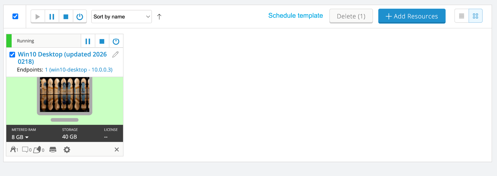
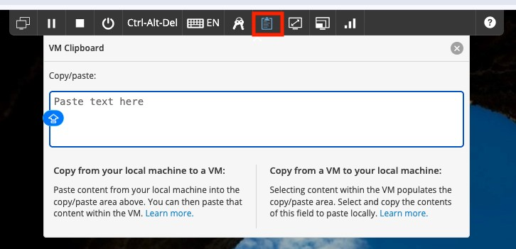

Lab 0: Connect to the virtual lab environment
Zscaler confidential informationScenario: You are joining an instructor-led lab session. In this lab, you will confirm that you can access the virtual lab environment and use the clipboard features needed to complete the remaining labs.
Objectives: By the end of this lab, you will:
Access the Skytap pod and connect to the lab VM.
Use the lab clipboard to copy/paste between host and VM.
Task 0.1: Verify lab access
Access the Skytap Portal URL: https://zscaler.skytap-portal.com/
Paste the Skytap passcode to access your lab environment
If the machine has not already started as displayed in the image below, select the Play button. The VM will launch.

Task 0.2: Use the lab clipboard
During these labs, you will frequently copy commands, URLs, and configuration values from the lab guide into the virtual machines.
Use the clipboard icon in the lab interface:
Select the clipboard icon.
Paste text into the Copy/paste: field.

In the VM, use Ctrl+V to paste the copied text.